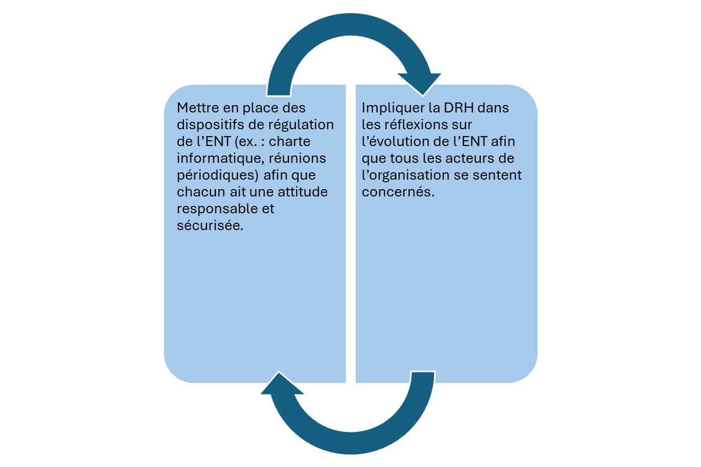
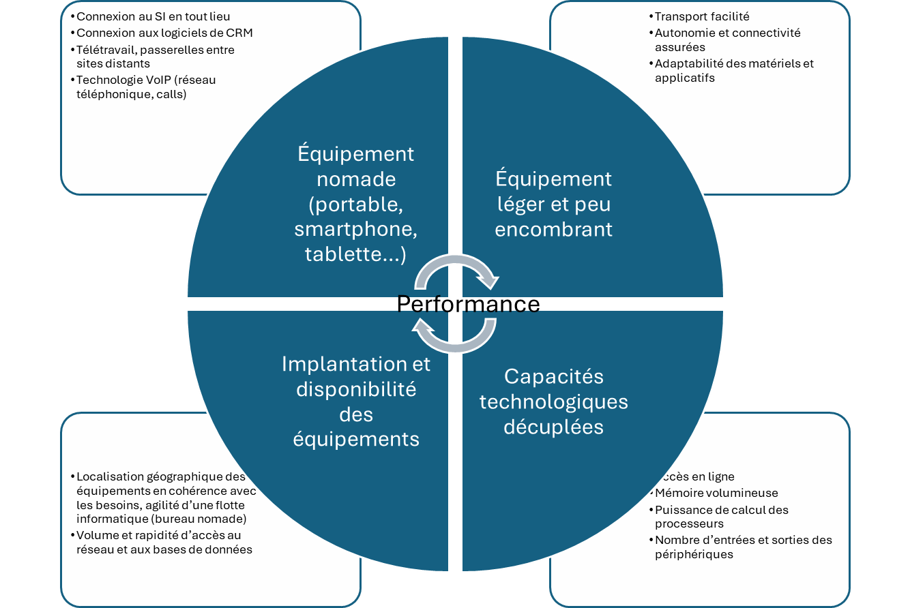
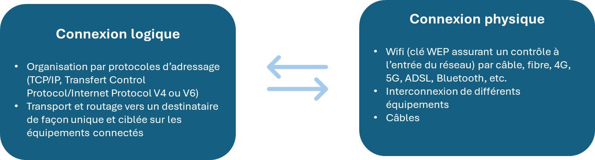
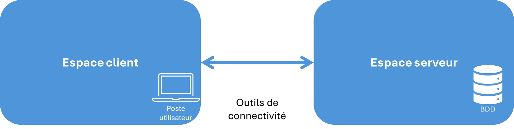
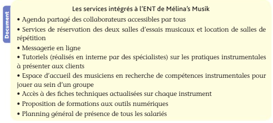
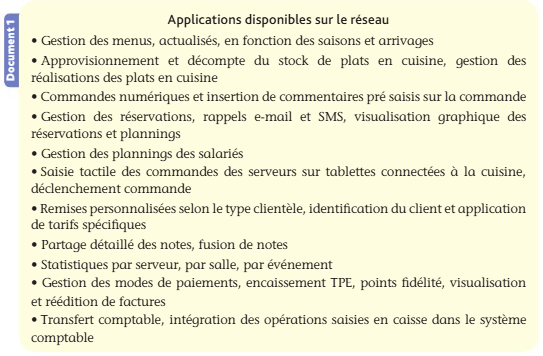
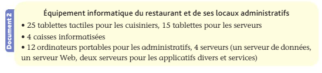

Programme
Pédagogie
Compétences attendues
- Maîtriser son espace numérique de travail ;
- Utiliser des outils numériques et des applications dans un contexte professionnel ;
- Localiser les ressources ;
- Se connecter au réseau de manière fiable ;
- Utiliser les services réseaux présents dans l’espace numérique de travail.
Savoirs associés
- Les moyens d’accès aux SI : poste de travail fixe ou mobile, tablettes, smartphone, terminaux et autres périphériques ;
- Localisation des données et des applications ;
- Les serveurs : principes fonctionnels ;
- Réseaux publics et privés : internet/intranet/extranet ;
- Modalités d’accès au réseau ;
- Les services réseaux : l’informatique en nuage, services d’annuaire, de messagerie, Web, transfert de fichiers.
Plan
- Cours
1.3.1 L’espace numérique de travail (ENT)
1.3.2 Les ressources numériques dans le contexte professionnel- Synthèse
Mots clés
Accès au réseau, Annuaire, Espace numérique de travail, Réseau, Équipements informatiques, Serveurs, Informatique en nuage, Réseau public, Réseau privé, VPN
Axe fondamental de la performance des entreprises, le réseau informatique repose sur des pratiques sans cesse développées nécessitant des formations et mises à niveau régulière. La compétitivité des entreprises passe désormais par la maîtrise de la dimension digitale. Comment identifier les avantages procurés par l’environnement numérique de travail ? Comment piloter la transition numérique des entreprises et profiter ainsi des potentialités offertes par le réseau ?
À quoi ça sert ?
C’est le chapitre le plus technique de la partie 1, et celui qui inquiète le plus les étudiants qui ne sont pas « informaticiens ».
Rassurez-vous : on ne vous demande pas de savoir monter un réseau, mais de lire l’environnement technique d’une organisation.
Concrètement : où sont rangées les données de l’entreprise ? qui peut y accéder, depuis où ? que se passe-t-il exactement quand vous ouvrez le logiciel de comptabilité ? Le jour où vous devrez expliquer à un client pourquoi ses données sont chez un hébergeur en Irlande, ce chapitre vous servira.
Cours
1.3.1 L’espace numérique de travail (ENT)
Chez Vasseur — la situation
Pour savoir si l’atelier peut livrer avant les vacances, Élodie appelle Nadia. Si Nadia est en réunion, Élodie rappelle. Pendant ce temps, le client attend au téléphone. Le planning de l’atelier existe pourtant — dans un tableur, sur le poste de Nadia, à Tours.
La question de cette section : comment donner à chacun l’accès aux ressources dont il a besoin, depuis là où il se trouve ?
Les caractéristiques d’un ENT
Définition
Un espace numérique de travail (ou portail de services) désigne un dispositif global d’offres de services numériques à la disposition des acteurs d’une organisation.
- Point d’entrée du SI accessible à tous, l’ENT doit prendre en compte l’ensemble des missions de l’organisation auxquelles il vient en appui et améliore la performance.
Exemple
L’ENT permet d’accéder :
- Aux agendas partagés des commerciaux ;
- Au service de réservation de la salle de visioconférence ;
- A une messagerie en ligne instantanée ;
- Aux inscriptions à la prochaine formation au PGI, aux sondages et questionnaires en ligne, etc.
| Avantages | Inconvénients |
|---|---|
| - Communication dans le travail : accessibilité rapide aux informations, connexion à l’organisation permanente, travail à distance, agilité, fluidité ; | - Gestion complexe de la sécurisation des contenus confidentiels et risque de surinformation ; |
| - Accessibilité aux ressources numériques : bases de données, applications, informations, processus, informations partagées ; | - Renforcement du sentiment de contrôle : les moments et durées de travail sont connus et conservés par le SI ; |
| - Facilite le travail collaboratif : les missions effectuées par un salarié peuvent être complétées par un autre en fonction des compétences et de la fiche de poste de chacun ; | - Brouillage entre la sphère du travail et la sphère privées : l’accès à distance permet le travail en dehors de la structure et conduire à des risques psychosociaux ; |
| - Rationalisation dans le travail : la structure du SI améliore la structuration du travail ; | - Affaiblissement des relations humaines : dans des grandes structures recourant au télétravail ; |
| - Amélioration d’un fonctionnement en processus : plusieurs collaborateurs peuvent agir en fonction de leurs compétences et mission tout au long d’un même processus. | - Certains changements affectant les fonctionnalités des ENT peuvent provoquer des réticences de la part des salariés (résistance au changement). |
- Deux actions sont essentielles lorsque l’on met en place un espace numérique de travail :

Les matériels utilisés par le SI
- Les principaux moyens d’accès au SI
- Les équipements permettant une connexion au système d’information sont variés afin de répondre à des besoins à géométrie variable (localisation géographique, accès aux données, utilisation de logiciels et applicatifs, partage avec la clientèle, interconnexion entre sites de production, confidentialité, etc.) :
| Poste de travail fixe | Rassemble plusieurs composants qui permettent la circulation et le traitement de l’information : matériels tels que la connectique, le processeur, la carte réseau, le ventilateur, la carte mère, les mémoires vive, morte et de masse (disque-dur interne ou externe) et logiciels tels que les systèmes d’exploitation et sécuritaires. |
|---|---|
| Ordinateur portable | Mêmes composants que le poste de travail fixe mais avec des capacités moindres (processeur moins puissant, espace de stockage mémoire vive plus petit, etc.) destinés à une utilisation agile au sein et à l’extérieur de l’entreprise. |
| Tablette | - Équipement connecté tactile (avec écran, sans clavier ni souris) très facilement transportable ; - Permet d’accéder aux applications, aux contenus multimédias, au réseau, etc. |
| Smartphone | - Équipement multifonction connecté permettant d’exécuter des applications et la navigation sur le Web, géolocalisation, messagerie vocale |
| Périphériques et terminaux (combinaisons de périphériques assurant la communication utilisateur-réseau) | - Équipements aux faibles ressources propres destinés à permettre le dialogue (requêtes à un serveur, utilisateur et système d’exploitation) : * Entrées : clavier, souris, webcam, micro, scanner, tablette graphique ; * Sorties : écran, imprimante, hauts parleurs ; * Entrées-sorties : modem, box, carte réseau. |
Définition — le système d’exploitation
Le système d’exploitation (ou OS, pour operating system) est le logiciel de base qui fait fonctionner la machine : il gère la mémoire, le processeur, les fichiers, les périphériques, et sert d’intermédiaire entre le matériel et les autres logiciels. Windows, macOS, Linux, Android et iOS sont des systèmes d’exploitation.
Une image pour comprendre
Le système d’exploitation est le chef d’orchestre de la machine. Les musiciens (le processeur, la mémoire, le disque, l’imprimante) savent chacun jouer leur partie, mais sans chef ils joueraient tous en même temps. Vos logiciels, eux, ne parlent jamais directement aux musiciens : ils s’adressent au chef, qui répartit le travail.
- Trois conséquences concrètes pour le gestionnaire :
- La compatibilité : un logiciel est écrit pour un système d’exploitation donné. Un progiciel de paie conçu pour Windows ne s’installera pas sur un Mac sans adaptation ;
- La sécurité : la majorité des correctifs de sécurité concerne le système d’exploitation. Un poste dont l’OS n’est plus mis à jour (Windows en fin de support, par exemple) devient une porte d’entrée pour une attaque ;
- Le coût : le renouvellement du parc est souvent dicté par la fin de support d’un système d’exploitation, et non par l’usure des machines.
- Des modes de connexion agiles au service de la performance
- Toutes les modalités de connexion répondent à des besoins sans cesse accrus et divers tant dans les contenus que dans les modalités d’échanges et de traitement des données :

Vérifiez que vous avez compris
Un salarié dit : « je préfère garder mes dossiers sur mon disque dur, c’est plus rapide ». Que lui répondez-vous ?
Qu’il a raison sur la vitesse et tort sur tout le reste. Un fichier sur un poste individuel n’est pas sauvegardé, n’est pas accessible aux collègues, échappe aux droits d’accès, et disparaît avec la machine ou avec son propriétaire. C’est exactement ce que l’ENT et le stockage partagé servent à éviter. La bonne réponse managériale n’est pas d’interdire, mais de rendre l’outil partagé assez rapide et simple pour que la question ne se pose plus.
Mise en pratique
Cas pratique 1 : ESN Nouméa
L’entreprise de services du numérique (ESN) Nouméa constitue un acteur fort en Nouvelle-Calédonie en matière de création de sites Web et d’applications sur mesure. Le site web www.esnnoumea.nc présente les diverses activités proposées et réalisées par les deux dirigeants, Alain Boulouparis et Étini Moé et leurs 35 salariés. La DRH, Tahi-toa Dani, s’interroge sur l’évolution des pratiques professionnelles des salariés et leur rapport aux outils numériques.
- Comment un salarié de l’ESN Nouméa peut-il se connecter à l’ENT de l’entreprise ?
- Quels sont les leviers de performances générées par l’ENT de l’ESN Nouméa ?
- L’accès aux ressources sur l’ENT est-il possible à l’identique pour tout collaborateur ?
- Comment la DRH doit-elle adapter le fonctionnement de l’entreprise de façon à maintenir un esprit d’équipe ?
Cas pratique 2 : Société Krafla
Compétences attendues
- Localiser les ressources
- Se connecter au réseau de manière fiable
La société Krafla, domiciliée à Clermont-Ferrand, est spécialisée dans les technologies de chauffage par géothermie. L’effectif de la société est de 55 personnes dont 2 comptables à temps partiel, 3 commerciaux et 50 techniciens. Un site Web permet aux clients d’accéder aux activités de l’entreprise. Le réseau local est constitué de 30 postes fixes affectés au dirigeant, Manuel Jonsson, aux comptables, aux commerciaux et aux ateliers (un poste par atelier). Trois imprimantes ont été installées sur le réseau. Le réseau comporte notamment un serveur dédié au PGI de l’entreprise, un serveur de données hébergeant le système de gestion de base de données relationnelle (SGBDR), un serveur Web et un serveur comportant les applicatifs permettant d’accéder à des services intranet. Les équipements matériels et les logiciels se situent dans un local sécurisé de l’entreprise au rez-de-chaussée du bâtiment.
- Analysez la situation du système informatique de la société Krafla, identifiez son mode de fonctionnement et soulignez-en les avantages ou inconvénients.
- Indiquez les modalités nécessaires pour accéder au réseau de Krafla. Manuel Jonsson vient de racheter la société Heckla, spécialisée dans les capteurs et les sondes géothermiques, qui exploite un réseau local similaire à celui de la société Krafla et qui regroupe 5 postes et deux imprimantes. Heckla utilise notamment une base de données clients. Toutes les activités d’Heckla s’apprêtent à rejoindre le site de Krafla.
- Identifiez les problèmes qui pourraient résulter de la réunion des deux systèmes informatiques.
1.3.2 Les ressources numériques dans le contexte professionnel
Chez Vasseur — la situation
À Blois, dès que les neuf salariés travaillent en même temps, le logiciel de gestion commerciale « rame ». Le serveur, lui, est à Tours, à 60 kilomètres. Thomas Lemoine soupçonne « le réseau », sans pouvoir dire quoi.
La question de cette section : que se passe-t-il concrètement entre le poste d’Élodie et le serveur de Tours, et où sont réellement rangées les données de l’entreprise ?
Les réseaux
Définition
Un réseau est constitué d’un ensemble d’équipements interconnectés qui forment une infrastructure réseau. Ces équipements sont : ordinateurs, serveurs, etc.
- Les finalités d’un réseau
- Un réseau vise à partager des ressources et à échanger des informations. Il permet notamment :
- Le partage de fichiers, d’applications (logiciels de bureautique, PGI), de matériels (disques durs, imprimantes, scanner), de données (base de données) ;
- La communication entre processus (échange de données entre différentes applications, intégration des données, pilotage synchronisé de machines industrielles) ;
- Une diminution des temps d’opérabilité (réduction des temps d’accès aux données, de la durée de réalisation des traitements, des délais de communication) ;
- Les échanges entre les personnes (messagerie, visioconférence, e-learning, groupware).
- Le réseau, source d’efficience
- Le réseau est un facteur d’efficience car :
- Il évite la redondance des matériels, des données, des applications et des traitements ;
- Il autorise l’utilisation de plateformes matérielles et logicielles hétérogènes (âges et caractéristiques différentes) et favorise leur évolution progressive (développement du parc informatique, introduction de nouvelles applications…) ;
- Il optimise les ressources financières dédiées au parc informatique grâce à la mutualisation des équipements, des données, des espaces de stockage, des applications ou encore des abonnements. Des économies de coûts sont ainsi réalisées.
- Les typologies de réseau
- Une typologie des réseaux peut être établie selon leur étendue :
| Catégories de réseaux | Étendue du réseau | Commentaires et caractéristiques |
|---|---|---|
| Réseau privé ou local ou LAN (Local Area Network) | Connexion des équipements au sein d’un espace géographiquement limité, d’une entreprise privée. | - Réservé aux utilisateurs autorisés d’une organisation ; - Utilisations courantes : utilisation des logiciels de gestion, PGI, travail collaboratif ; Utilisation de services de type Internet (navigation, messagerie, accès à des applications) sur le réseau local (intranet). |
| Réseau étendu WAN (Wide Area Network) | Interconnexion d’équipements dans une zone géographique étendue. | - Recours à des moyens de transmission publics, dont le plus connu des WAN, Internet (Interconnected Network), réseau de réseaux ; - Possibilité d’accès à l’intranet via Internet au-delà du réseau local (uniquement pour les utilisateurs autorisés) ; Possibilité d’ouverture d’une partie de l’intranet à des partenaires extérieurs (fournisseurs, clients) via l’extranet. |
- Les caractéristiques des réseaux
- On distingue les réseaux publics (Internet accessible à tous) et les réseaux privés (propriété d’une organisation ou d’un particulier) ;
- Ces derniers peuvent être utilisés de façon privée par la location physique de lignes, ou virtuellement, par réseau privé virtuel ou VPN (Virtual Private Network) ;
- Le VPN permet de relier des réseaux locaux par Internet de façon sécurisée à l’aide d’outils de chiffrement (tunnelisation) ;
- La mise en place de VPN permet de relier des réseaux locaux, favorisant ainsi l’accès aux ressources pour les utilisateurs d’équipements nomades en toute sécurité.
Chez Vasseur
Les deux sites de Menuiseries Vasseur sont reliés par un VPN : l’agence de Blois passe par Internet, mais dans un tunnel chiffré, ce qui lui donne accès au serveur de Tours comme si elle était dans le même bâtiment.
C’est aussi ce que devraient utiliser les poseurs le jour où ils saisiront leurs relevés de cotes depuis le chantier. Le revers : tout passe par la ligne Internet du siège. C’est très exactement pour cette raison que le logiciel « rame » à Blois quand les neuf salariés travaillent en même temps — le problème n’est pas le logiciel, c’est le tuyau.
- Les modalités d’accès aux réseaux
- L’accès fiable et sécurisé aux réseaux nécessite :
- Un identifiant permettant de reconnaître l’utilisateur comme faisant partie de l’organisation (habilitation à entrer dans l’ENT) ;
- Un mot de passe pour prouver que l’utilisateur est bien la personne qu’il prétend être au moyen de son identifiant (certains identifiants se construisent de manière générique, ex. : « prénom_nom ») ;
- Un opérateur Internet (fournisseur d’accès à Internet, ou FAI) avec des contraintes de service (disponibilité) et de débit ;
- Une connexion par un utilisateur en interne ou grâce à un logiciel de VPN.

- Les équipements réseaux
A savoir
L’accès au réseau à distance est qualifié de « nomadisme numérique ».
- Pour se connecter à un réseau, divers équipements sont nécessaires :
| Item | Description |
|---|---|
| Serveur | - Système (matériel et logiciel) offrant des services ; - Puissance adaptée à son rôle car il peut être sollicité par de multiples utilisateurs simultanément. |
| Carte réseau | Composant servant d’interface entre un hôte (ordinateur, imprimante…) et le réseau local (privé). |
| Poste client | - Ordinateur ou poste de travail capable d’effectuer des tâches bureautiques ou des missions de métier ; - Poste client lourd (des applications et ressources sont dans l’unité centrale) ou client léger aux capacités limitées (plus performant en maintenance) qui lance des requêtes aux serveurs. |
| Concentrateur ou hub (en fin d’existence) | - Démultiplication des prises informatiques pour relier les matériels du réseau ; - Envoi systématique par le hub des informations à tous les équipements (risque de saturation du trafic réseau). |
| Commutateur ou switch | - Démultiplication des prises informatiques pour relier les matériels du réseau ; - Recentrage des messages et contenus envoyés uniquement sur les équipements destinataires, connus par leur adresse IP. |
| Routeur | Interconnexion de deux réseaux différents (ex. : privé et public). |
- Les protocoles
Définition
Un protocole est un ensemble de règles convenues à l’avance, que deux machines respectent pour se comprendre : dans quel ordre parler, sous quelle forme, comment vérifier que le message est bien arrivé.
Une image pour comprendre
Un protocole, c’est la politesse téléphonique. « Allô ? » — « Bonjour, Untel à l’appareil » — « Je vous écoute ». Personne n’a écrit ces règles, mais si l’un des deux ne les respecte pas, la conversation ne démarre pas. Deux ordinateurs ont besoin de la même chose, en beaucoup plus strict.
- Les protocoles que le programme attend :
| Protocole | Ce qu’il fait | Où vous le rencontrez |
|---|---|---|
| TCP/IP | Le couple de protocoles fondateur d’Internet. IP attribue une adresse à chaque machine et achemine les paquets de données ; TCP découpe le message, vérifie que tous les morceaux arrivent et les remet dans l’ordre. | Toute connexion réseau, sans exception |
| HTTP / HTTPS | Transporte les pages Web entre le serveur et le navigateur. Le S signifie que l’échange est chiffré : personne ne peut lire au passage. | La barre d’adresse du navigateur |
| SMTP, POP, IMAP | Envoi (SMTP) et réception (POP, IMAP) des courriels. | Votre messagerie |
| FTP / SFTP | Transfert de fichiers volumineux entre machines. | Dépôt d’un fichier chez un partenaire, télétransmission |
Attention
Ne validez jamais un paiement ni une saisie de données personnelles sur une page en
http://simple : sans le S, les informations circulent en clair. C’est un réflexe professionnel, et une question classique d’examen sur la sécurité des échanges.
La localisation des données et des applications
- L’architecture client-serveur
-
L’architecture client-serveur permet un dialogue entre les postes client et le serveur selon le principe suivant :
- Un poste client (dédié uniquement à ce rôle) lance une demande d’accès (requête) à un logiciel, un calcul, à une base de données ;
- Un serveur (ou les serveurs) dédié (s) qui répond à cette demande puisqu’il est fournisseur de services.

Une image pour comprendre
L’architecture client-serveur, c’est le restaurant. Le client (votre poste de travail) ne va pas en cuisine : il passe commande auprès du serveur, qui exécute et rapporte le plat. Plusieurs clients peuvent commander en même temps, la cuisine gère les priorités et la file d’attente. Vous ne savez pas — et vous n’avez pas besoin de savoir — où se trouve la cuisine ni combien de cuisiniers y travaillent. C’est exactement ce qui se passe quand vous ouvrez votre progiciel comptable : votre écran affiche, le serveur calcule et conserve.
- Les principes fonctionnels des serveurs
- Les serveurs assument de nombreuses fonctions au sein du réseau en répondant aux demandes (requêtes) des postes client :
- Traitement et réponse, par ordre de priorité (file d’attente), aux requêtes des postes clients (y compris simultanément) ;
- Changement de localisation (autres serveurs, prestataires ESN, informatique en nuage) ;
- Répartition du traitement sur des serveurs (logiciels, bdd, accès Internet, sauvegardes, etc.), tout en masquant la localisation du serveur (information inconnue pour les usagers).
Exemple
Selon les besoins, il existe des serveurs dédiés : serveur de données ou serveurs de fichiers (gestion des données intégrées aux applications) ; serveur d’application (hébergement du PGI mis au service des usagers du réseau) ; serveur proxy (dispositif entre réseau local et internet pour accélérer les accès réseau).
- La localisation géographique des serveurs
- Les entreprises doivent s’enquérir des lieux de stockage des données afin d’être en conformité avec le RGPD.
| Enjeux | Caractéristiques |
|---|---|
| - La proximité permet d’accélérer la communication ; - Le choix d’un pays doit garantir la confidentialité des données stockées ; - La localisation constitue un argument de vente (France notamment pour les entreprises françaises) ; - Confier les données à des serveurs localisés en France est source de garantie en matière de sécurité et de protection des données. | - Fournisseurs et hébergeurs de cloud sont soumis aux lois du pays dans lesquels sont installés les serveurs ; - Le mode de transmission des données entre le cloud et l’utilisateur doit être sécurisé (chiffrement) ; - Environnement compétitif, les tarifs et conditions d’utilisation des espaces constituent un argument concurrentiel ; - La localisation fait partie des informations contractuelles que le client doit connaître. Cette transparence est essentielle. |
La virtualisation
Définition
La virtualisation consiste à faire fonctionner plusieurs ordinateurs simulés par logiciel — appelés machines virtuelles — sur une seule machine physique. Chaque machine virtuelle possède son propre système d’exploitation et ses propres applications, et se comporte comme un ordinateur indépendant.
Une image pour comprendre
Un immeuble plutôt qu’un lotissement. Au lieu de construire une maison par famille — une machine physique par serveur —, on bâtit un immeuble et on y installe plusieurs appartements indépendants. Chaque locataire a ses clés, ses murs et son compteur ; il ignore qui vit à côté. Mais la toiture, les fondations et le chauffage sont partagés, donc moins chers.
- Les apports de la virtualisation pour l’organisation :
- Économie : un serveur physique est utilisé à 10 ou 15 % de ses capacités en moyenne. En hébergeant dix serveurs virtuels dessus, on paie une machine au lieu de dix ;
- Souplesse : créer un nouveau serveur devient une opération de quelques minutes, sans achat ni livraison de matériel ;
- Sécurité et continuité : une machine virtuelle se sauvegarde entièrement, comme un fichier. En cas de panne, elle est redémarrée sur une autre machine physique ;
- Cloisonnement : un incident sur une machine virtuelle n’affecte pas les autres ;
- En contrepartie : la panne de la machine physique met à l’arrêt toutes les machines virtuelles qu’elle héberge. La concentration crée une dépendance.
Le lien avec le cloud
La virtualisation est la technique qui rend l’informatique en nuage possible. Quand un hébergeur vous « loue un serveur », il vous loue presque toujours une machine virtuelle sur un matériel qu’il partage entre des centaines de clients. C’est ce qui explique que le cloud se facture à l’usage et s’ajuste en quelques clics.
Les services réseaux
- L’informatique en nuage (Cloud Computing)
Définition
L’informatique en nuage, ou cloud computing, désigne un mode d’organisation donnant accès à des ressources et services à la demande via Internet. La localisation peut être éloignée entre les ordinateurs, les serveurs, les données, les logiciels, etc.
Une image pour comprendre
Le cloud, c’est l’électricité. Vous ne possédez pas de centrale : vous branchez, vous consommez, vous payez ce que vous avez consommé, et la puissance disponible s’adapte sans que vous ayez à prévenir. L’envers du décor est le même aussi : vous dépendez entièrement du fournisseur et de la ligne qui vous relie à lui. Le jour où la connexion tombe, plus rien ne fonctionne.
- Ces ressources sont distantes des utilisateurs et adaptables aux besoins.
- L’informatique en nuage (Cloud Computing) se distingue par des caractéristiques qui lui sont propres :
- Organisation en architecture client-serveur où les ressources (logiciels, données) sont accessibles via Internet ;
- Serveurs gérés souvent par un prestataire extérieur ESN d’où perte de contrôle ;
- Connexion Internet de qualité nécessaire (sécurité, vitesse, débit, disponibilité, continuité de service) ;
- Tarification des services à l’utilisation (en fonction des connexions consommées par les utilisateurs) ;
- Partage des ressources sur des espaces différents ou éloignés géographiquement (données, applications, services, stockage, etc.) ;
- Réduction des coûts (car proportionnels à l’utilisation donc variables) ;
- Ajouts agiles de fonctionnalités, adaptation des services en fonction de l’évolutivité de l’organisation (nombre de postes et d’utilisateurs) ;
- Gestion effectuée par des entreprises spécialisées donc source de qualité pour l’organisation utilisatrice.
Focus — les trois modalités du cloud
- Le cloud privé est dédié à une seule entreprise (géré ou hébergé en interne, ou par un prestataire) ;
- Le cloud public est partagé entre plusieurs clients et facturé à l’utilisation ;
- Le cloud hybride combine les deux : les données sensibles sur le cloud privé, les logiciels sur le cloud public. C’est le compromis coût / sécurité.
- Les services d’annuaire
Définition
Un annuaire est un dispositif rassemblant des informations consultables par les utilisateurs du réseau (répertoire téléphonique, inventaire des ressources matérielles, bases de données clients et fournisseurs).
- Le service d’annuaire doit être mis à jour en fonction du profil des utilisateurs et relié à d’autres services tels que la messagerie, l’Intranet, les espaces de groupware (travail de groupe), etc.
- Les services de messagerie
Définition
Une messagerie est une fonctionnalité permettant de consulter, gérer et envoyer des courriers électroniques (e-mails) via un navigateur Internet.
- L’utilisateur n’a pas à installer de logiciel spécifique de messagerie sur son ordinateur ou smartphone ;
- La messagerie est accessible depuis n’importe quel poste disposant d’une connexion Internet (SaaS, Software As A Service).
- Les services Web
- On regroupe sous l’expression « services Web » tous les dispositifs ou protocoles permettant à des applications hétérogènes de communiquer en réseau.
Exemple
Un client internaute souhaite connaître le prix d’un article dans une enseigne commerciale en envoyant un message sur le Web. Le message contenant la référence de l’article en question va effectuer le traitement et renvoyer le prix au client.
- Les services de transfert de fichiers
- Désigne la possibilité de déposer et d’accéder à des espaces de stockage partagé de fichiers ;
- L’espace est accessible via Internet et dispose de capacités volumiques supérieures à un simple mail.
Attention
Avant d’utiliser une plateforme de transfert ou de stockage de fichiers, vérifiez qu’il n’existe pas déjà un service mis à disposition par l’entreprise ou que les règles de sécurité informatique de l’entreprise vous y autorisent.
Exemple
WeTransfer ou encore Grosfichiers sont des plateformes de transfert de fichiers couramment utilisées. Drop Box et Google Drive sont des plateformes de partage et de stockage de fichiers.
Vérifiez que vous avez compris
Quelle est la différence entre le cloud et la virtualisation ?
La virtualisation est une technique : faire tourner plusieurs ordinateurs simulés sur une seule machine physique.
Le cloud est un modèle économique : louer des ressources informatiques à distance, à la demande, facturées à l’usage. Les deux se rencontrent souvent — le cloud repose techniquement sur la virtualisation — mais on peut virtualiser chez soi, sans cloud, et l’inverse ne vous concerne pas. Retenez : la virtualisation répond à « comment ? », le cloud à « chez qui, et à quel prix ? ».
Mise en pratique
Cas pratique 3 : Mélina’s Musik
Compétences attendues
- Maîtriser son espace numérique de travail
- Utiliser des outils numériques et des applications dans un contexte professionnel
L’entreprise Mélina’s Musik vend des instruments de musique à Caen depuis 30 ans. Le local commercial est vaste et comporte plusieurs salles d’essais musicaux et des salles privatives équipées de vidéoprojecteurs. L’entreprise a également aménagé l’année dernière une salle louée à des musiciens. Conscient des nouvelles exigences de ses clients, le dirigeant, Jean Danstor, a développé un ENT sous-utilisé à ce jour par les salariés musiciens. Jean Danstor souhaiterait valoriser ces outils.
- Les salariés utilisent encore à ce jour un registre sous format papier de réservation des salles d’essai. Des conflits apparaissent lorsque le registre n’est pas mis à jour, voire égaré. Expliquez comment Jean Danstor pourrait inciter les salariés à utiliser l’ENT.
- Certains salariés ultra-spécialisés ne peuvent renseigner les clients en dehors de leur champ de compétence. Identifiez, pour ces acteurs, les avantages d’un ENT.
- Les logiciels commerciaux et de gestion des stocks sont accessibles via l’ENT. Or, les salariés ne les utilisent pas systématiquement. Analysez les risques et la manière d’y remédier.

Cas pratique 4 : Limoges Gourmet
Compétences attendues
- Utiliser des outils numériques et des applications dans un contexte professionnel
- Utiliser les services réseaux présents dans l’espace numérique de travail
Le restaurant étoilé Limoges Gourmet est situé dans le centre-ville de Limoges depuis 20 ans. Il emploie 77 salariés aux spécialités variées : chefs, cuisiniers, serveurs, réceptionnistes, barmans, commis de salle, administratifs, etc. La dirigeante, Suzanne Donvala, s’appuie sur le SI pour améliorer les performances du restaurant.
- Analysez la manière dont les diverses applications et outils disponibles sur le réseau (document 1) contribuent à l’amélioration de la performance du restaurant.
- Enumérez les matériels nécessaires (document 2) pour que ce SI fonctionne à plein.
- Expliquez pourquoi le fonctionnement du réseau améliore le travail collaboratif du restaurant.


Cas pratique 5 : Start-up Dici
Compétence attendue
Localiser les ressources
La start-up Dici, entreprise située à Melun et dirigée par le fondateur, Léonard Dici, conçoit et fabrique des radiateurs incorporant des serveurs. Il s’agit d’un mode de chauffage dont la chaleur dissipée par les serveurs est récupérée à des fins de chauffage des bâtiments administratifs. Les serveurs dégagent une chaleur importante à l’utilisation et nécessitent d’installer des modes de refroidissement entraînant ainsi une double consommation énergétique. Léonard Dici a eu l’ingénieuse idée de profiter de la chaleur externalisée par les serveurs de données et d’application afin de limiter les coûts de consommation énergétique liés au chauffage. Ses clients sont essentiellement localisés en région parisienne et font appel à Dici pour stocker leurs propres bases de données mais également celles d’autres entreprises faisant appel à Dici pour l’hébergement des données. Les clients qui hébergent ainsi des serveurs utilisés par d’autres entreprises bénéficient de rémunérations pour compenser les consommations énergétiques inhérentes au fonctionnement des serveurs.
- Identifiez les avantages d’une localisation des données dans la région de Melun pour Dici.
- Expliquez pourquoi le fonctionnement architecture-client permet une localisation des données distante des utilisateurs.
- Analysez la manière dont la start-up profite du développement de l’informatique en nuage.
Cas pratique 6 : Surf’Tecnik
Compétence attendue
Se connecter au réseau de manière fiable
L’entreprise Surf’Tecnik est installée à Bastia. Son activité se développe depuis 22 ans dans le domaine de la vente de surfs, kitesurfs, vêtements et accessoires associés. L’entreprise comporte à ce jour 66 salariés au sein des bureaux administratifs situés à Bastia. Ses salariés ont des compétences diverses : comptables, financières, commerciales et informatiques. Deux étudiants en DCG vont être intégrés à l’entreprise en tant que stagiaires au cours du mois de juin prochain. La dirigeante, Elsa Vincensini, informaticienne de formation, gère la société. Le réseau de Surf’Tecnik est un réseau local privé. Les commerciaux, souvent en déplacement dans les clubs nautiques du pourtour méditerranéen, doivent consulter les stocks et saisir leurs commandes depuis leur ordinateur portable. Elsa Vincensini refuse pour l’instant d’ouvrir le réseau sur Internet, par crainte des intrusions. Missions
- Distinguez le réseau local (LAN) et le réseau étendu (WAN), puis précisez lequel des deux Surf’Tecnik exploite aujourd’hui.
- Proposez une solution technique permettant aux commerciaux d’accéder au réseau de l’entreprise depuis l’extérieur, sans renoncer à la sécurité. Expliquez son principe.
- Indiquez les éléments à fournir aux deux stagiaires pour qu’ils puissent se connecter au réseau, et la précaution à prendre à la fin de leur stage.
Cas pratique 7 : Neige’Cloud
Compétences attendues
Utiliser les services réseaux présents dans l’espace numérique de travail
L’entreprise de services numériques Neige’Cloud est située à Amiens. Son dirigeant, Édouard Gand, a créé cette société il y a 10 ans et s’est spécialisé dans les réponses à apporter aux entreprises en matière de services réseaux. L’entreprise comporte aujourd’hui 56 salariés avec des compétences étendues. L’entreprise se propose de gérer à la place des entreprises clientes un certain nombre de services, notamment des espaces de stockage de type informatique en nuage (Cloud Computing), la mise en place de services Web, des services annuaires, etc. Son client, l’entreprise Boréale, spécialisée dans la fabrication d’éclairages urbains, vient de contacter un commercial de Neige’Cloud afin de négocier un contrat. La commerciale chargée de l’affaire, Fatima Iglesias, va répondre aux questions formulées par le client. Missions
- Expliquez pourquoi l’informatique en nuage constituera un avantage pour Boréale.
- Précisez si les services d’annuaire sont indispensables pour Boréale.
Cas pratique 8 : Cabinet Ferrand & Associés
Compétences attendues
- Localiser les ressources
- Utiliser les services réseaux présents dans l’espace numérique de travail
Le cabinet d’expertise comptable Ferrand & Associés, installé à Tours, compte 24 collaborateurs répartis sur deux sites. Chaque collaborateur dispose d’un poste fixe au bureau et d’un ordinateur portable pour les déplacements en clientèle. Le cabinet possède aujourd’hui six serveurs physiques dans un local technique : un pour le progiciel de production comptable, un pour la paie, un pour la gestion électronique des documents, un pour la messagerie, un pour les sauvegardes et un serveur de fichiers. Ces machines ont entre 4 et 9 ans. L’associé responsable de l’informatique constate que la plupart d’entre elles ne sont sollicitées que quelques heures par jour, et que deux fonctionnent encore sous un système d’exploitation qui n’est plus mis à jour par son éditeur. Le cabinet hésite entre trois voies : remplacer les six serveurs à l’identique, virtualiser sur deux machines neuves, ou basculer les applications chez un hébergeur en mode cloud. Missions
- Expliquez le risque que fait courir au cabinet le maintien de deux serveurs sous un système d’exploitation qui n’est plus mis à jour.
- Présentez le principe de la virtualisation et montrez en quoi il répond au constat de sous-utilisation des serveurs.
- Comparez la virtualisation sur site et le passage au cloud du point de vue du coût, de la maîtrise des données et de la dépendance du cabinet.
- Un collaborateur en clientèle se connecte au réseau du cabinet depuis l’ordinateur portable. Identifiez les protocoles mobilisés lorsqu’il consulte l’intranet du cabinet puis dépose un fichier volumineux à destination d’un confrère.
- Compte tenu du secret professionnel qui s’impose à un cabinet comptable, indiquez le point de vigilance essentiel si les données partaient chez un hébergeur.
QCM
Synthèse
La dimension technologique du SI
L’espace numérique de travail (ENT) — le point d’entrée unique aux services numériques de l’organisation : agenda partagé, messagerie, applications, documents.
Avantages : accessibilité, travail collaboratif, fonctionnement en processus, rationalisation.
Limites : sécurisation des contenus confidentiels, sentiment de contrôle, brouillage vie professionnelle / vie privée, affaiblissement des relations humaines, résistance au changement.
Les matériels et le système d’exploitation — postes fixes et portables, tablettes, smartphones, périphériques. Le système d’exploitation fait fonctionner la machine et sert d’intermédiaire avec les logiciels ; sa fin de support est un enjeu de sécurité et de renouvellement du parc.
Les réseaux — ils servent à partager des ressources et à échanger des informations, et sont une source d’efficience (pas de redondance, mutualisation des coûts).
| Item | Description |
|---|---|
| LAN | réseau local, un site |
| WAN | réseau étendu, plusieurs sites — Internet en est un |
| Intranet / extranet | réseau interne / partie ouverte à des partenaires identifiés |
| VPN | tunnel chiffré à travers Internet, pour accéder au réseau depuis l’extérieur |
| Équipements | serveur, carte réseau, poste client, commutateur, routeur |
Les protocoles — les règles qui permettent à deux machines de se comprendre :
- TCP/IP (le socle) ;
- HTTP/HTTPS (le Web, le S signifiant chiffré) ;
- SMTP / POP / IMAP (la messagerie) ;
- FTP / SFTP (le transfert de fichiers).
La localisation des données — l’architecture client-serveur sépare celui qui demande de celui qui exécute ; c’est ce qui rend la localisation du serveur indifférente à l’utilisateur. Le lieu d’hébergement reste un enjeu de conformité (RGPD), de performance et d’argument commercial.
La virtualisation — plusieurs ordinateurs simulés par logiciel sur une seule machine physique : économie, souplesse, sauvegarde simplifiée, mais concentration du risque.
Les services réseaux — l’informatique en nuage (cloud, en modes privé, public ou hybride), les services d’annuaire, de messagerie, les services Web et le transfert de fichiers.
◀ 1.2 La dimension humaine du système d’information · 1.4 La dimension organisationnelle du système d’information ▶